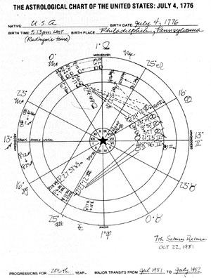
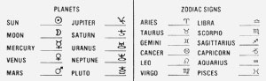

Economic analysts use a variety of tools, including the study of historical cycles, to forecast future trends, and-as we've all seen in the past decade-even the most respected economists can be dead wrong. Yet the idea that history repeats itself is widely accepted . . . and we decided that the following historical coincidences-as interpreted by a noted astrologer-are worth paying attention to, whatever their causes might be.
On October 22, 1981-in the midst of a massive solar system alignment which is currently happening in the ancient zodiacal symbol of Libra-the United States experienced its seventh Saturn return. (The return of Saturn in Libra occurs only once in approximately 29 years, and its strong influences can be noted for as much as a year's time on both sides of such dates.)
Astrologically speaking, whatever was born on earth from 1775 through 1777-including nations such as ours-has Saturn "exalted" in the sign of Libra . . .the symbol representing the "Balance Beam of the Law", which justifies the "defense of liberty" on one hand, and the "infringement of liberty" on the other. Indeed, according to its national astrological chart, the United States can represent both the positive and negative extremes of law and order. In the Declaration of Independence, for example, the country took on the responsibility of constructing a new order of freedom . . .yet more than once, in defense of our own liberties, we've considered it just to deny those of others.
Furthermore, on July 4, 1776 the hot summertime sun was moving into a "square"-or 90° aspect-with ponderous, restrictive Saturn. In proper astrological terminology, then, in the birth chart of the U.S., Saturn would be considered "afflicted" by the sun.
Now many people will doubt the significance of such occurrences, but the fact is that every Saturn return for the United States has been marked by at least one direct and harsh confrontation with other countries over what is fair internationally, and-on those occasions-every President involved has made mistakes . . . the most prevalent being to employ "protective" measures and take an isolationist stance.
THE FIRST SATURN RETURN
The first Saturn return that the United States endured took place during the autumn of 1805. At that time President Thomas Jefferson-in order to protect and defend the American economy from European manipulation after the War of Independence-decided to block trade to and from Europe . . . as part of a policy known as "peaceable coercion". His notorious embargoes and tariff programs were based on the belief that we had to defend our liberty, even if it meant snubbing other nations . . . most of which were merely trying to collect debts and reestablish a BALANCE of trade.
As it turned out, "peaceable coercion" was an absolute disaster. American workers went on strike . . . many of the new states were threatening secession . . .and inflation skyrocketed as the government paid off panicky merchants with freshly printed money. The young and tender country nearly fell apart at the joints, and only the War of 1812 rallied the people and put an end to the mismanagement that took place during the nation's initial Saturn return.
THE SECOND TIME AROUND
The second time the planetary configuration occurred was in late 1834. At that time, President Andrew Jackson headed a nation that was (and had been) expanding westward. Hi response was to deregulate the banking business and open new government lands to spiraling speculation. Furthermore, in a concerted attempt to buy out all foreign interests, he created and enforced new laws, rationalizing his stern measures by claiming to "protect" the growing country and to defend its liberty to expand.
But, as the Saturn return took place, Jackson nearly lost control of the nation. Texas moved to declare itself an independent republic. The cotton surplus, which accumulated when Europe refused to buy the fiber in protest against Jackson's tariff policies, almost buried the southern states in landslide inflation. And when the midwestern wheat crop failed, the nation plunged into a severe economic crisis. The Civil War can be seen partly as a result of Jackson's illadvised policies during the second visit of Saturn in Libra.
THE THIRD IS NO CHARM
Abraham Lincoln, a classically saturnine figure, was President during our third Saturn return . . .which occurred in the summer of 1884. (He was assassinated a few months later, in April 1885. ) But long before the Civil War drew to a close, Lincoln was involved in shaping the reconstruction policies that he hoped would bring "justice and liberty" to a wartorn continent.
It was during his administration that steps were taken to insure federal "protection" of the banking, shipping, exporting, and real estate industries. The result of such protective measures was inflation, created by the presence of excessive cash in the economy. In fact, it was during this return that the nation had "In God We Trust" imprinted on its coins in an attempt to make them seem more substantial . . .and, although this phrase seems quite innocent to most folks, it sent the subtle message to our allies abroad that, economically, we placed little trust in them.
As the war dragged on, the government-again in the name of defending liberty-took extraordinary measures in subjugating the nearly conquered Confederacy and punishing its allies abroad. The blockades and tariffs imposed at the time contributed to the mass unemployment and severe depression. Nevertheless, Lincoln did much to realize the posi tive side of Saturn's return to Libra with his Emancipation Proclamation, which rivals the Declaration of Independence as a statement of "freedom and justice for all".
THE FOURTH CYCLE
After the horrors of the Civil War, many crimes were committed "in the defense of liberty". Greed became the virtue of the Robber Barons . . . and the freedom to be greedy was being defended. In an essay included in The National Experience: A History of the United States (Harcourt, Brace and World, Inc., New York, 1968), David Schuster states: "In one of the strangest reversals in history, man became economic man, democracy became identified with capitalism, liberty with property and the use of it, equality with opportunity for gain, and progress with economic change and the accumulation of capital."
When Grover Cleveland was President in 1893, some of the major schools of thought presented in universities held that businessmen were "selected by nature" over politicians . . . that the state existed only to protect property . . . and that poverty was inevitable. But when Saturn returned that autumn, President Cleveland couldn't sell the exclusive and isolationist "Gospel of Wealth" to our foreign neighbors. In fact, the Europeans influenced Far East currencies and helped create a panic in the gold market, which contributed to a severe depression in the United States. Cleveland's defense of "economy above justice" added nothing to the peaceful coexistence of the international community. Rather, it helped create some of the instability that eventually involved the United States in the First World War.
LESSON NUMBER FIVE
Warren Harding was President when Saturn returned a fifth time, in November 1922. The wealthy constituency of his administration blatantly used the government to manipulate the national and international marketplace. Land and oil scandals filled the news media . . . while the Ku Klux Klan was so powerfully violent that martial law had to be declared in Oklahoma.
Tariffs and trade blockades were instigated to protect private interests. In fact, the withdrawal of the United States into economic and political isolationism threw some postwar governments into severe crisis. As you'll recall, that international depression eventually caught up with our country in the last days of the 1920's.
SATURN FOR THE SIXTH TIME
Saturn's sixth return was managed by Harry S. Truman in the autumn of 1952. By the end of World War II, the United States had taken on the responsibility of "defending the liberty" of many other nations of the world . . . with Korea being the most obvious example.
Spurred by the implications of that conflict and by the fact that the United States was flooded with European goods, Truman refused to reduce tariffs and remove trade restrictions imposed on other nations, and Eisenhowerwho was elected right in the midst of this astrological event-was even more absorbed in "defending liberty" internationally at any cost.
Meanwhile, at home, a Communist witch hunt terrorized much of the populace . . . trade unions went out on rebellious strikes . . . the steel and automobile industries nearly collapsed . . . and inflation went wild. (So much for the lessons of history! )
SEVEN . . . AND MORE OF THE SAME?
Now, Ronald Reagan is President for our nation's seventh Saturn return. It's at this point that historical fact has to be set aside, and speculation takes over. However, considering the similarities of our previous experiences with these astrological events, it seems difficult to forecast anything very different. It appears, in fact, that there's little to do but prepare diligently for the possibility of unpleasantness equaling that which has occurred in the past. For example:
[A] Tariffs and trade blockades always seem to be a very popular part of Saturn returns in the United States. Reagan can thus be expected to place some such restrictionsperhaps on foreign auto industries-and the temporary effects may enchant him into using the same techniques in various other areas, including the importation of technology andfood.
[B] Radical unionization of workers is another recurrent factor at such times, and those industries which the government has tried to protect seem, historically, to suffer the most from strikes. It will be wise business managers, therefore, who resist the temptation to ask for government trade intervention.
[C] Strong regional politics always seem to create the potential for a weakening or dissolution of the union between the states. In every Saturn return there have been active separatist movements.
Differences in regional attitudes about liberty and justice also seem to weaken the framework of the federal judiciary system during such periods.
[D] Excessive unemployment, especially among women and minority men, seems inevitable if the pattern follows its usualcourse.
[E] Musicians may well spill out their hearts through a significant new revolution in American music. Rock 'n' roll, jazz, country, and bluegrass are all byproducts of Saturn returns.
[F] As the international marketplace responds to U.S. tariffs and trade blockades, extraordinary pressure could be placed o n the dollar. Desertion in the marketplace would leave the country feeling cold and alone, and the inflation at home could easily spin the nation toward economic depression.
[G] There's a high probability of severe winds, unexpected cold spells, and drought during Saturn-in-Libra returns. Climatic events have claimed many harvests in past cycles . . . so preparation for such eventualities-including careful management of stored food-is strongly recommended.
[H] The backbone of the American system, the family, always seems to come to the rescue when the chips are down in Saturn return years. However, in this case a redefinition of the "normal" family seems possible.
[I] The nation's defense industry will likely take the very aggressive position of "enforcing justice" in other nations, and a significant number of regional military skirmishes, funded by the United States, could undermine world peace during this Saturn return.
At the very least, these past and portended events should make us aware of the ability of the human mind to remember, and help us use that ability to make quality decisions. Indeedeven though it seems as if we never quite grasp the full value of its teachings-human history is one of our most powerful tools for survival.
|
 astrological chart of the united states |
 the symobls and zodiacs |
|